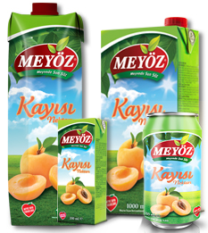

- 
-
ÖZELLİKLERİ
Kayısının sağlıklı bir cilde sahip olmak isteyenler için büyük bir fırsattır.
Günde bir bardak kayısı nektarı ve kayısı suyunun günlük A vitamini ihtiyacının büyük bölümünü karşılamaktadır.
Kayısı nektarının vitamin ve mineral açısından son derece zengin olması,vücuttaki zararlı toksinleri atmaya yardımcı olur.
Kayısı nektarının içinde bol miktarda potasyum, kalsiyum, demir ve A vitaminine dönüşebilen beta-karoten bulunmaktadır.
Bir bardak kayısı nektarının içeriğinde yüksek A vitamini bulunmaktadır. Bu oran ile vücudun günlük ihtiyaç duyduğu A vitamininin yaklaşık yarısını karşılamaktadır. Kayısı nektarı içerdiği C vitamini ile de bağışıklık sisteminin güçlendirmeye yardımcı olur.